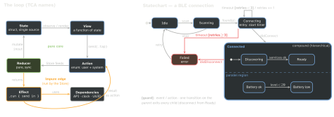

design · folio
In one line: State lives in one place; the view renders it and sends actions; a pure reducer computes the next state and returns effects (side effects as values) whose results come back as actions — one loop, one direction (Elm → Redux → TCA). A state machine constrains which transitions exist; statecharts add hierarchy, parallel regions and guards. Both aim at “make illegal states unrepresentable”.
Download PDF Print view LaTeX source


How it works
- Elm:
updatereturns (new model,Cmd) — the ancestor of “reducer returns effects”. Redux:dispatch(action); reducer (state, action) → new state; effects live in middleware (thunks, sagas). - TCA:
@Reducer=@ObservableState struct State+enum Action+Reduce { state, action in }returningEffect:.none·.send·.run { send in }·.cancellable(id:). TheStoreruns effects. Dependencies (@Dependency: API, clock, UUID) are overridden in tests and previews. - Composition: parent state/action embed the child’s (
Scope,.ifLet,.forEach); views getstore.scope(...). Navigation is state (@Presents,StackState). - Testing:
TestStoreis exhaustive — assert every state change andreceiveevery effect action, or it fails. - FSM = states + events + transition (state, event) → state. Statechart (Harel 1987) adds hierarchy, parallel (orthogonal) regions, guards, entry/exit actions, history. W3C SCXML; XState in JS.
vs MVVM
| Unidirectional / TCA | MVVM |
|---|---|
| one reducer mutates; replayable | VM methods mutate anywhere |
| effects explicit, cancellable by id | ad-hoc Tasks per VM |
| exhaustive, deterministic tests | you pick what to assert |
| boilerplate, learning curve, lock-in | light, native, familiar |
@ObservableState tracks only the fields a view reads. Every tap is several hops (action → reducer → effect → action).
When it pays / when it’s ceremony
Pays: complex shared state, many async effects + cancellation, deep navigation/links, a big team wanting one shape; flows with real protocol states (BLE, checkout, onboarding, player). Ceremony: small apps, forms, prototypes — plain @Observable. The principles (one owner, explicit transitions, effects at the edge) pay even without the framework.
Example — illegal states unrepresentable
// BAD: 2^3 combos, most meaningless
struct Conn { var connecting, connected: Bool; var error: Error? }
// GOOD: only real states; data lives where it is valid
enum BLEState {
case idle, scanning
case connecting(Peripheral, tries: Int)
case connected(Peripheral, services: [Service])
case failed(Error) }
func next(_ s: BLEState, _ e: BLEEvent) -> BLEState { // pure
switch (s, e) {
case (.idle, .scan): return .scanning
case let (.scanning, .found(p)):
return .connecting(p, tries: 0)
case let (.connecting(p, n), .timeout) where n < 3: // guard
return .connecting(p, tries: n + 1)
case (.connecting, .timeout): return .failed(BLEError.timeout)
default: return s } // event not allowed here: ignored
}In TCA this switch is the reducer body; the CoreBluetooth delegate is a dependency whose callbacks come back as actions.
Traps
- “The reducer calls the API.” No — sync and pure; it returns an effect; the result re-enters as an action.
- State as a class — no: value types;
@ObservableStategives fine-grained observation of the struct. - Booleans for modes (
isLoadingtrue and anerrorset?) — use an enum. default: return shides missing transitions — list them where the machine is safety-relevant.
Remember
State → View → Action → Reducer → State; effects out, actions back in; enums, not flags.